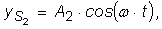

Numim interferenţă compunerea mai multor unde.
Numim interferenţă compunerea mai multor unde.
C.8. |
Interferenţa undelor mecanice |
Când plouă pe suprafaţa unui lar, fiecare loc în care cade un strop de apă devine o sursă de perturbaţii, de la care se propagă unde pe suprafaţa apei, în toate direcţiile (figura 1C8−1).
| Fig. 1C8-1. Suprafaţa unui lac, în timp ce plouă. |
Într−un punct de pe suprafaţa apei sosesc deodată unde de la numeroase surse. Oscilaţia în acel punct este rezultatul suprapunerii (compunerii) acestor unde.
Numim interferenţă compunerea mai multor unde.
 Provocarea 1C8−1
Provocarea 1C8−1
Cum te aştepţi să oscileze un punct P al unui mediu, în care sosesc unde plane de la două surse sincrone? (figura 1C8−2)
Fig. 1C8-2. În punctul P interferă undele plane sosite de la două surse sincrone.
Presupunând, pentru simplitate, că cele două surse oscilează armonic după legile:
respectiv,

ecuaţiile undelor plane care sosesc în punctul P sunt:
| (1) |
respectiv,
| (2) |
Deşi sursele sunt sincrone (aceeaşi frecvenţă şi aceeaşi fază), datorită distanţelor (în general) diferite până în punctul P, undele care interferă în punctul P sunt, în general, defazate cu:
| (3) |
Aşadar, diferenţa de fază dintre undele care interferă în punctul P depinde de diferenţa de drum Δx.
Amplitudinea de oscilaţie în punctul P depinde de amplitudinile celor două unde care interferă, precum şi de defazajul dintre acestea:
| (4) |
Provocarea 1C8−2
Care puncte ale mediului te aştepţi să oscileze cu cea mai mare amplitudine?
Amplitudinea de oscilaţie dată de relaţia (4) este maximă în punctele mediului pentru care :
În punctele de maxim de interferenţă, amplitudinea de oscilaţie este mai mare decât a fiecărei surse în parte!
Pentru aceste puncte, defazajul cu care sosesc undele este nul, sau, în general, multiplu par de p (
 , k fiind un număr întreg, inclusiv zero).
, k fiind un număr întreg, inclusiv zero).
Folosind relaţia (3), obţinem condiţia pentru un maxim de interferenţă (interferenţă constructivă):
Prin interferenţa a două unde plane, care au aceeaşi lungime de undă, se obţin maxime de interferenţă în punctele mediului pentru care diferenţa de
drum este multiplu par al semilungimii de undă.
În cazul particular în care cele două unde au amplitudini egale(A1 = A2 = A), amplitudinea de oscilaţie în maximele de interferenţă este 2 · A, dublă faţă de amplitudinea de oscilaţie a fiecărei surse!
În maximele de interferenţă, energia de oscilaţie (care depinde de pătratul amplitudinii) este de patru ori mai mare decât a fiecărei surse şi de două ori mai mare decât suma energiilor de oscilaţie ale celor două surse!
Provocarea 1C8−3
Cum este oare posibil ca oscilaţiile unor puncte ale mediului să fie mai energice decât oscilaţiile surselor?
Doar (foarte) puţine puncte ale mediului se află în maximele de interferenţă. Pentru toate celelalte, amplitudinea este mai mică ().
Amplitudinea minimă (minimul de interferenţă) se obţine în punctele în care :
Pentru aceste puncte, defazajul cu care sosesc undele este p sau, în general, un multiplu impar de p ().
Aşadar, condiţia pentru un minim de interferenţă (interferenţă distructivă) este:
Minimele de interferenţă se obţin în punctele pentru care diferenţa de drum este un multiplu impar al semilungimii de undă.
În cazul particular în care cele două unde au amplitudini egale, amplitudinea de oscilaţie în minimele de interferenţă este nulă! Două unde sosesc deodată în aceste puncte care rămân, totuşi, neafectate!
Interferenţa distribuie inegal energia de oscilaţie între maximele şi minimele de interferenţă.
Figura 1C8−3 prezintă interferenţa undelor pe suprafaţa apei, provenite de la două surse (aproape) punctiforme.
Fig. 1C8-3. Interferenţa undelor pe suprafaţa apei.